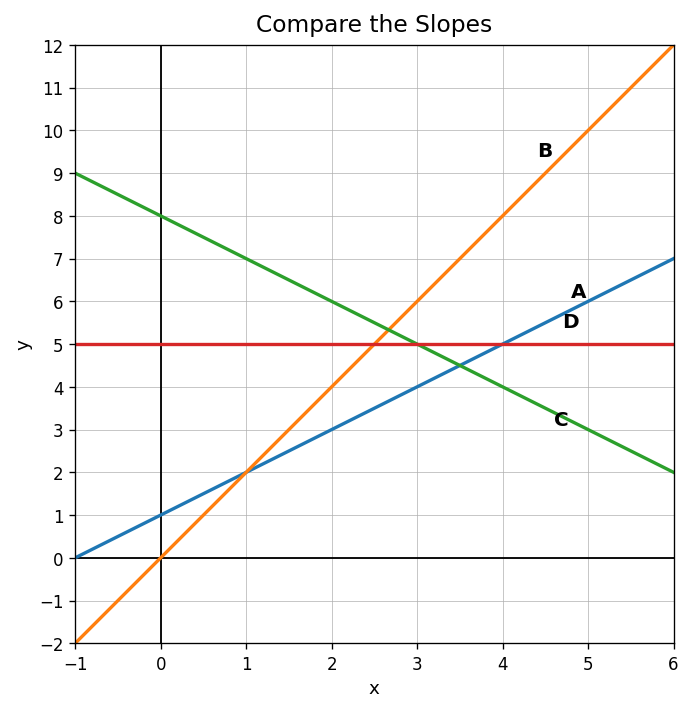
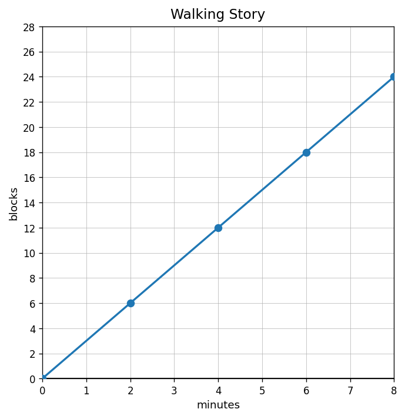

State whether each slope is positive, negative, zero, or undefined: $\frac{3}{4}$, $-2$, $0$, and the slope of a vertical line.
Use the graph to order lines A, B, C, and D from greatest slope to least slope.

A line modeling savings has slope $-15$. Explain what the slope could mean in context and why the sign matters.
Create two different real-world situations that both have a constant rate of change of $\frac{5}{2}$. For each, identify the meaning of the numerator and denominator.
Which ordered pair is shown by the second column of the table?
| $x$ | 1 | 2 | 3 | 4 |
|---|---|---|---|---|
| $y$ | 9 | 11 | 13 | 15 |
In $y=7x+2$, identify the number that is added after multiplying by 7.
A bike rental costs 9 dollars plus 6 dollars per hour. Which expression represents the total cost for $h$ hours?
What type of representation is the sentence “The height increases by 4 inches each week”?
Create a table for $y=2x+7$ using $x=0,1,2,3$.
Write two ordered pairs from the graph and describe the relationship in words.

Two students create different-looking tables for the same equation. What evidence would prove the tables represent the same relationship?
For predicting the value when $x=100$, would you prefer a graph, table, equation, or context? Choose one and justify your decision.
A graph crosses the vertical axis at $(0,8)$. What is the $y$-intercept?
Plot mentally or describe the pattern for the points $(0,2)$, $(1,5)$, $(2,8)$, and $(3,11)$. What changes as $x$ increases?
A student says the point $(4,-2)$ means “go left 4 and down 2.” Identify and correct the error.
Create a short real-world story for a graph that begins at $(0,12)$ and decreases steadily to $(6,0)$. Explain the meaning of both points.